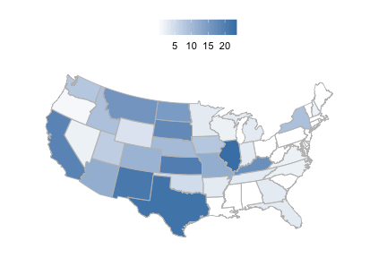
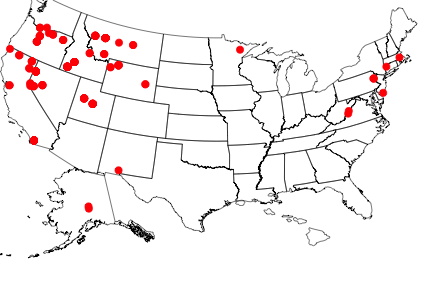
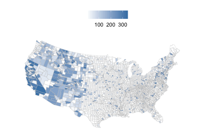
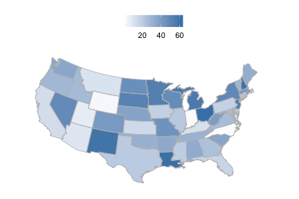

rbison is an R package to search and retrieve data from the USGS BISON service. rbison wraps R code around the BISON API to allow you to talk to the BISON database from R.
BISON has occurrence data for the US only.
BISON is the US Node of GBIF and regularly updates from GBIF to have full coverage and is committed to eventually providing most BISON originating data to GBIF, however, users should be aware that several million BISON records are not in GBIF. The Solr API for BISON is fully open with no limits, allowing full batch download, faceting and geospatial searches on both DC fields and BISON added fields such as the full ITIS taxonomy, FIPS Codes, and georeferencing of county records to documented centroids.
Info
See https://bison.usgs.gov/doc/api.jsp for API docs for the BISON API.
Install rbison
install.packages("rbison")Or install development version from Github
install.packages("devtools")
devtools::install_github("ropensci/rbison")Load packages
Notice that the function bisonmap automagically selects the map extent to plot for you, being one of the contiguous lower 48 states, or the lower 48 plus AK and HI, or a global map. If some or all points outside the US, a global map is drawn, and throws a warning. You may want to make sure the occurrence lat/long coordinates are correct.
Get data
out <- bison(species = "Helianthus annuus", count = 10)Inspect summary
out$summary
#> $literature
#> [1] 1
#>
#> $living
#> [1] 120
#>
#> $observation
#> [1] 1546
#>
#> $centroid
#> [1] 1
#>
#> $unknown
#> [1] 4506
#>
#> $specimen
#> [1] 4269Map occurrences
head(out$counties)
#> record_id total county_name state
#> 1 42003 2 Allegheny County Pennsylvania
#> 2 39075 1 Holmes County Ohio
#> 3 40063 2 Hughes County Oklahoma
#> 4 39077 1 Huron County Ohio
#> 5 17043 3 DuPage County Illinois
#> 6 40067 2 Jefferson County OklahomaAll points within the US (including AK and HI)
Get data
out <- bison(species="Bison bison", count=200)Inspect summary
out$summary
#> $fossil
#> [1] 350
#>
#> $observation
#> [1] 822
#>
#> $centroid
#> [1] 1
#>
#> $specimen
#> [1] 1038
#>
#> $unknown
#> [1] 6Map occurrences
bisonmap(out, tomap="state")
All points within the contiguous 48 states
Get data
out <- bison(species="Aquila chrysaetos", count=400)Inspect summary
out$summary
#> $fossil
#> [1] 681
#>
#> $observation
#> [1] 159076
#>
#> $centroid
#> [1] 1
#>
#> $unknown
#> [1] 11046
#>
#> $specimen
#> [1] 1911Map occurrences
bisonmap(out, tomap="points")
Plot county or state
With any data returned from a bison call, you can choose to plot county or state level data
Counties - using last data call for Aquila
bisonmap(out, tomap="county")
States - using last data call for Aquila
bisonmap(out, tomap="state")
Constrain search with county IDs or bounding boxes
Constrain search to a certain county.
Check out https://en.wikipedia.org/wiki/Federal_Information_Processing_Standard_state_code to get state and county fips codes. Fips codes are like so: First two digits are the state code - last three are the county code. For example the 06 in 06037 is the state of California, and the 037 is the Los Angeles county.
out <- bison(species="Helianthus annuus", countyFips = "06037")Inspect summary
out$summary
#> $literature
#> [1] 1
#>
#> $living
#> [1] 120
#>
#> $observation
#> [1] 1546
#>
#> $centroid
#> [1] 1
#>
#> $unknown
#> [1] 4506
#>
#> $specimen
#> [1] 4269By default, the query only returned 10 records
head(out$points)
#> name decimalLongitude decimalLatitude occurrenceID provider
#> 1 Helianthus annuus -82.23795 39.74319 2070186925 BISON
#> 2 Helianthus annuus -96.69667 36.31371 2063306023 BISON
#> 3 Helianthus annuus -93.34064 37.25819 2067683767 BISON
#> 4 Helianthus annuus -96.59406 38.29855 2067182820 BISON
#> 5 Helianthus annuus -96.17793 43.08286 2067235408 BISON
#> 6 Helianthus annuus -96.08381 33.12344 2067248337 BISON
#> basis common_name geo
#> 1 Specimen sunflower, common sunflower, wild sunflower, annual sunflower Yes
#> 2 Specimen sunflower, common sunflower, wild sunflower, annual sunflower Yes
#> 3 Specimen sunflower, common sunflower, wild sunflower, annual sunflower Yes
#> 4 Specimen sunflower, common sunflower, wild sunflower, annual sunflower Yes
#> 5 Specimen sunflower, common sunflower, wild sunflower, annual sunflower Yes
#> 6 Specimen sunflower, common sunflower, wild sunflower, annual sunflower YesOr specify county by its actual name - probably much easier.
out <- bison(species="Helianthus annuus", county = "Los Angeles")Inspect summary
out$summary
#> $observation
#> [1] 76
#>
#> $centroid
#> [1] 1
#>
#> $unknown
#> [1] 125
#>
#> $specimen
#> [1] 120By default, the query only returned 10 records
head(out$points)
#> name decimalLongitude decimalLatitude occurrenceID
#> 1 Helianthus annuus -118.1887 34.07082 1802602192
#> 2 Helianthus annuus -118.2369 34.09727 1802610785
#> 3 Helianthus annuus -118.1736 34.19255 1227713782
#> 4 Helianthus annuus -118.2619 34.19640 1300513704
#> 5 Helianthus annuus -118.2619 34.19640 1300518885
#> 6 Helianthus annuus -118.2619 34.19640 1021804654
#> provider basis
#> 1 iNaturalist.org Observation
#> 2 iNaturalist.org Observation
#> 3 iNaturalist.org Observation
#> 4 Centro Internacional de Agricultura Tropical (CIAT) Unknown
#> 5 Centro Internacional de Agricultura Tropical (CIAT) Unknown
#> 6 Consortium of California Herbaria Specimen
#> common_name geo
#> 1 sunflower, common sunflower, wild sunflower, annual sunflower Yes
#> 2 sunflower, common sunflower, wild sunflower, annual sunflower Yes
#> 3 sunflower, common sunflower, wild sunflower, annual sunflower Yes
#> 4 sunflower, common sunflower, wild sunflower, annual sunflower Yes
#> 5 sunflower, common sunflower, wild sunflower, annual sunflower Yes
#> 6 sunflower, common sunflower, wild sunflower, annual sunflower Yesbison will help you if you spell the name wrong, or use a partial name. The results are not printed below, but you would get a prompt asking you to pick between the two counties that start with Los.
bison(species="Helianthus annuus", county = "Los")Constrain search to a amorphous area.
Check out http://en.wikipedia.org/wiki/Well-known_text for an in depth look at the options, terminology, etc.
out <- bison(species="Helianthus annuus", aoi = "POLYGON((-111.06360117772908 38.84001566645886,-110.80542246679359 39.37707771107983,-110.20117441992392 39.17722368276862,-110.20666758398464 38.90844075244811,-110.63513438085685 38.67724220095734,-111.06360117772908 38.84001566645886))")Inspect summary
out$summary
#> $specimen
#> [1] 1The data
out$points
#> name decimalLongitude decimalLatitude occurrenceID provider
#> 1 Helianthus annuus -110.7211 39.00903 2066046849 BISON
#> basis common_name geo
#> 1 Specimen sunflower, common sunflower, wild sunflower, annual sunflower YesConstrain search to a certain aoibbox.
An aoibbox uses the format minx, miny, maxx, maxy.
out <- bison(species="Helianthus annuus", aoibbox = '-120.31,35.81,-110.57,40.21')Inspect summary
out$summary
#> $observation
#> [1] 61
#>
#> $centroid
#> [1] 1
#>
#> $unknown
#> [1] 293
#>
#> $specimen
#> [1] 165The data, by default, the query only returned 10 records
head(out$points)
#> name decimalLongitude decimalLatitude occurrenceID
#> 1 Helianthus annuus -114.9006 39.41823 2062644410
#> 2 Helianthus annuus -116.4590 37.96638 1300517727
#> 3 Helianthus annuus -114.9006 39.41823 1300518084
#> 4 Helianthus annuus -119.2855 39.63380 437422426
#> 5 Helianthus annuus -117.4039 36.56198 1300517742
#> 6 Helianthus annuus -117.4039 36.56198 1300517745
#> provider basis
#> 1 BISON Specimen
#> 2 Centro Internacional de Agricultura Tropical (CIAT) Unknown
#> 3 Centro Internacional de Agricultura Tropical (CIAT) Unknown
#> 4 MNHN - Museum national d'Histoire naturelle Specimen
#> 5 Centro Internacional de Agricultura Tropical (CIAT) Unknown
#> 6 Centro Internacional de Agricultura Tropical (CIAT) Unknown
#> common_name geo
#> 1 sunflower, common sunflower, wild sunflower, annual sunflower Yes
#> 2 sunflower, common sunflower, wild sunflower, annual sunflower Yes
#> 3 sunflower, common sunflower, wild sunflower, annual sunflower Yes
#> 4 sunflower, common sunflower, wild sunflower, annual sunflower Yes
#> 5 sunflower, common sunflower, wild sunflower, annual sunflower Yes
#> 6 sunflower, common sunflower, wild sunflower, annual sunflower Yes